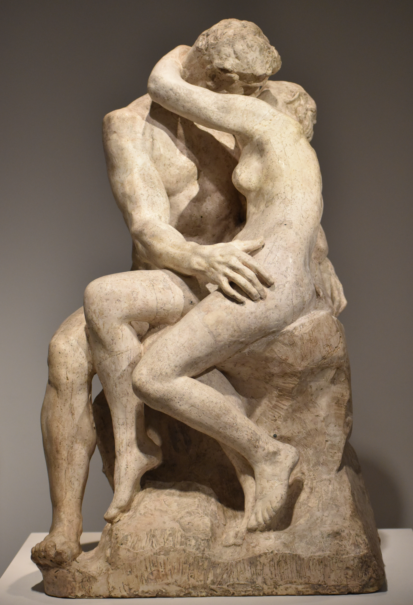

El ChiQ'aq
July 10, 2026
Let me bike all the way to El Fuego,
El Todopoderoso Fuego,
El ChiQ'aq para los íntimos.
Let me bike all the way to El Fuego.
And I will let your wind breathe me in the climb.
And I will let your trembling ground shake my hips.
So I will dance un perreo con swing.
Let me bike all the way to El Fuego.
And I will let your ashes suffocate me.
And I will let your lava melt my body.
So I will slowly burn on your shores.
Let me bike all the way to El Fuego.
So I will ride your seismic desire.
So I will smell your sulfurous love.
On the edges of your diamond kiss,
On the ridge of your carnal embrace,
Will the Kiss of Rodin be ours?
Yes, only if you dare let it cool…
· · ·
Context & Notes
El ChiQ'aq ("where the fire is") is the name given to a still active volcano in Guatemala. It inspired me for writing this love letter, with multiple volcanic and geological features used as metaphors for describing some of the sensations and emotions associated with my relationship with R.
Comments
If this poem stirred something in you, share a thought below.